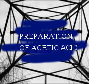

Preparation of Acetic Acid

How Acetic Acid Produce ?
Acetic acid is produced synthetically or naturally through bacterial fermentation. About 75% acetic acid made for use in the chemical industry is produced through methanol carbonylation, described below. The rest is generated through alternative methods. Now only 10% of acetic acid production is produced by natural means, but most laws that regulate acetic acid in vinegar must come from biological processes
The two largest producers of acetic acid are Celanese and BP Chemicals. Other major manufacturers are Millennium Chemicals, Sterling Chemicals, Samsung, Eastman, and Svensk Ethanolkemi.
1) Carbonilation of methanol
Most acetic acid is produced by carbonylation. In this reaction, methanol and carbon monoxide react to produce acetic acid according to the equation:
This process involves iodomethane as an intermediate, in which the reaction itself occurs in three stages. A metal carbonyl catalyst is required for carbonylation
(1) CH3OH + HI --> CH3I + H2O
(2) CH3I + CO --> CH3COI
(3) CH3OI + H2O --> CH3COOH + HI
Two processes associated with methanol carbonylation are: Monsanto process with rhodium catalyst, and Cativa process with iridium catalyst. The Cativa process is more environmentally friendly and more efficient and has replaced many previous processes.
The amount of water catalysis used in both processes is considerable, but the Cativa process requires less water, so the gas-water shift reaction can be suppressed and the byproducts produced are also less.
By changing the reaction conditions, acetic anhydride can also be produced in the same refinery using rhodium catalyst.
2) Oxidation of acetaldehyde
The acetaldehyde used is produced by the oxidation of light butane or naphtha, or hydration of ethylene. When light butene or naphtha is heated with air accompanied by several metal ions, including manganese ions, cobalt and chromium, peroxides are formed which further break down into acetic acid according to the equation of the reaction below.
Generally this reaction is run at temperature and pressure in such a way that it reaches the highest possible temperature but butane is still a liquid form. The reaction conditions are generally about 150 ° C (302 ° F) and 55 atm. By-products such as butanone, ethyl acetate, formic acid and propionic acid may also be formed. This byproduct is also commercially valuable and if desired the reaction conditions can be changed to produce more byproducts, but its separation from acetic acid becomes an obstacle as it costs much more
Making Recipe of Artificial Vinegar Method Slow
If we start from scratch and do not use culture to accelerate the fermentation of alcohol into vinegar, it is best to start with a concoction containing low alcohol content (no more than 5-10%) and not add extra sugar.
Apple cider, grape, fermented fruit juice, or stale beer are the perfect starting ingredients.
Regarding the juice of apples, can be started with fresh apple cider or hard apple cider. Fresh apple cider takes several weeks to change the vinegar because it is first fermented into a hard apple cider before it becomes vinegar.
1. Pour the initial liquid into a glass or bowl or bottle. If using glass, try to select a dark bottle. Fermentation occurs in the dark, so we need a dark container or need to store fluids in dark places. The advantage of a clear bottle is to see what happens when checking vinegar, but we need to keep it dark for the rest of the time.
2. The process of fermentation requires air, but we do not want insects and dust into the recipe kta. Cover the bottle with a few layers of thin cotton cloth and tighten with a rubber band.
3. Place the container in a dark and warm place. The required temperature is about 60-80 ° F (15-27 ° C). Fermentation occurs faster at warmer temperatures. The length of time it takes to convert alcohol to acetic acid depends on the temperature, the composition of the starting material, and the availability of acetic acid bacteria. The slow process lasts from 3 weeks to 6 months. Initially, the bacteria will collect the liquid, eventually forming a gelatin layer over the starting material.
4. Bacteria require air to stay active, so it's best to avoid disturbing or stirring the mixture. After 3-4 weeks, test the liquid in small amounts to see if it has turned into vinegar. First, kiss the sealed bottle. If the vinegar is ready, it tastes like strong vinegar. If the bottle passes this preliminary test, wrap a thin cotton cloth, take a little liquid, and feel. If the vinegar passes the taste test, it is ready to be filtered and bottled. If you do not like the taste, change the thin cotton fabric and let the solution stand for longer. We can check it weekly or monthly if not ready. Note: The bottle with the faucet at the bottom makes the taste test easier, so we can remove a little liquid without disturbing the vinegar that is formed at the top of the container.
5. Now we are ready to filter and insert our vinegar bottle. Filter the liquid through a coffee screen or a thin cotton cloth. If planning on making more vinegar, keep some of the slimy material from sticking to the filter. This is the vinegar parent and can be used to accelerate the production of future vinegar supplies. The collected fluid is vinegar.
6. Since homemade vinegar usually contains little residual alcohol, we may want to boil liquids to eliminate alcohol. Also, boiling vinegar kills unwanted microorganisms. It is also very useable on newly filtered and unpasteurized vinegar. Unpasteurized vinegar will have a shorter shelf life and should be cooled.
7. Unpasteurized vinegar (fresh) can be stored in a jar or bottle sterilized and sealed in the refrigerator for several months. To paste the vinegar, heat it at 170 ° F (77 ° C) and keep the temperature for 10 minutes. This can be achieved easily in a pot container, if we do not have a pan on the stove there is monitor the temperature. The pasteurized vinegar can be stored in a closed container and sterilized for several months at room temperature.
Bibliography
http://fitriisusan.blogspot.co.id/2011/04/pembuatan-asam-asetat-dengan-proses.html
http://sainskimia.com/2017/08/22/cara-membuat-cuka/
https://id.wikipedia.org/wiki/Asam_asetat
by :Maura Khalishah B